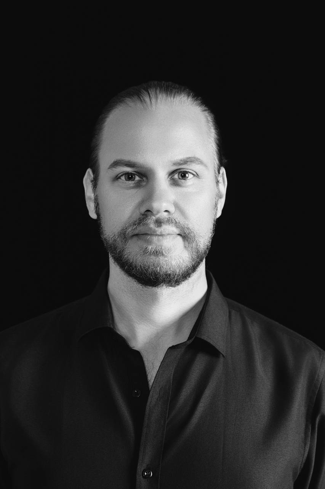
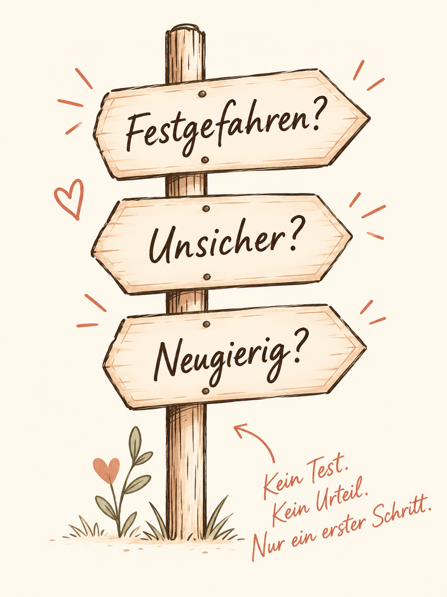
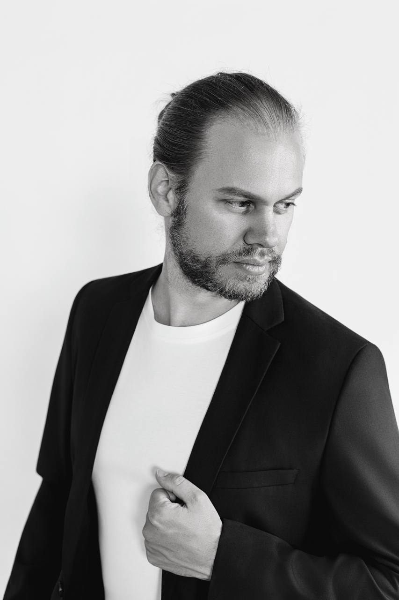
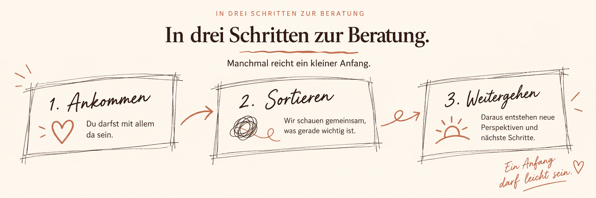

Einzelberatung
Wenn du deine Beziehung, Gefühle oder eine Entscheidung für dich sortieren möchtest.
Erstgespräch anfragen →Psychosoziale Beziehungsberatung
Manchmal braucht es keinen schnellen Rat, sondern einen Ort, an dem sichtbar werden darf, was zwischen euch passiert.
Ich begleite Einzelpersonen, Paare und Menschen in vielfältigen Beziehungskonstellationen dabei, festgefahrene Dynamiken zu verstehen, klarer zu werden und neue Schritte zu finden.
Graz · Online

Ein kleiner Orientierungsimpuls
Bevor ihr schon wissen müsst, wie es weitergeht, könnt ihr erst einmal einen kleinen Blick auf eure Dynamik werfen.
Kein Test. Keine Diagnose. Ein erster Blick auf eure Dynamik.

Mein Angebot
Wenn du deine Beziehung, Gefühle oder eine Entscheidung für dich sortieren möchtest.
Erstgespräch anfragen →Wenn ihr verstehen wollt, was zwischen euch passiert — und ob und wie ihr wieder zueinander finden könnt.
Erstgespräch anfragen →Für offene, polyamore und andere Beziehungskonstellationen — ohne dass eure Beziehungsform zuerst zum Problem erklärt wird.
Mehr erfahren →
Meine Haltung
Schwierige Dinge dürfen ausgesprochen werden. Ich werde nicht einfach entscheiden, wer recht hat — und dir auch nicht nach dem Mund reden. Gemeinsam schauen wir darauf, was zwischen euch passiert, was dahinterliegt und welcher nächste Schritt stimmig sein kann.
Mehr über meine Arbeitsweise →Der Einstieg
Manchmal reicht ein kleiner Anfang.


Über mich
Ich bin Theophil Kroller, psychosozialer Berater und Gründer von Beziehungsdynamiken. Mich interessiert weniger, wie Beziehung „sein sollte“, sondern was tatsächlich zwischen Menschen passiert.
Mein Zugang ist klar, respektvoll und beziehungsorientiert — mit Raum für schwierige Themen, unterschiedliche Perspektiven und auch Humor.
Mehr über mich & meine Qualifikationen →Ohne Verpflichtung und ohne dass du schon eine Lösung haben musst.